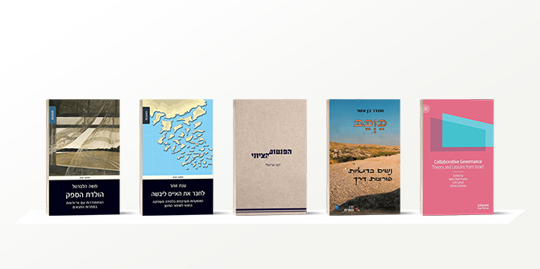
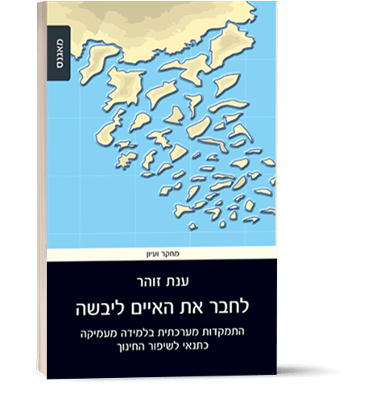
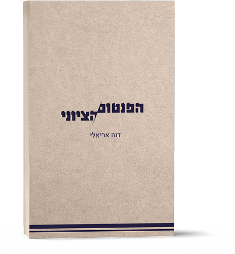

למאגר הספרים פרי עטם של חברי סגל מנדל נוספו בשנה האחרונה חמישה: שלושה מהם על-ידי חברי סגל בית ספר מנדל למנהיגות חינוכית:
לחבר את האיים ליבשה, מאת פרופ' ענת זוהר;
הולדת הספק, מאת פרופ' משה הלברטל; ו Collaborative Governance, Theory and Lessons from Israel בעריכתה של ד"ר נטע שר-הדר (יחד עם ד"ר ליהיא להט ופרופ' יצחק גל-נור), ושניים מפרי עטן של חברות סגל מרכז מנדל למנהיגות בנגב:
כוכב: נשים בדואיות פורצות דרך, מאת פרופ' סמדר בן אשר, והפנטום הציוני מאת פרופ' דנה אריאלי. נראה שהמשותף בין ספרים אלו, שנכתבו מנקודות מבט ודיסציפלינות שונות, הוא קריאה למנהיגות להתבונן באומץ על המציאות הקיימת, לאתגרה, ולזהות בה אפשרויות לשיפור חינוכי וחברתי.

לחבר את האיים ליבשה
מאת פרופ' ענת זוהר
הוצאת עם עובד
לחבר את האיים ליבשה
פרופ' ענת זוהר
הולדת הספק
מאת פרופ' משה הלברטל
הוצאת מאגנס
הולדת הספק
פרופ' משה הלברטל
Collaborative Governance, Theory and Lessons from Israel
עורכים: ד"ר נטע שר-הדר, ד"ר ליהיא להט ופרופ' יצחק גל-נור
הוצאה: Palgrave Macmillan
הספר Collaborative Governance, Theory and Lessons from Israel , שנערך על ידי
ד"ר נטע שר-הדר, ד"ר ליהיא להט ופרופ' יצחק גל-נור, אוגד בתוכו מחקרים בנושא משילות משולבת – שותפות בין מגזרים שונים שנועדה לשפר את תהליך עיצוב המדיניות ויישומה. המחקרים שבספר הם תוצרת של קבוצת מחקר, בניהולן של ד"ר שר-הדר וד"ר להט, שפעלה במרכז לצדק חברתי ודמוקרטיה ע"ש יעקב חזן במכון ון-ליר. חברי הקבוצה הגיעו משלל עיסוקים הן במחקר באקדמיה והן בפעילות חברתית וציבורית, ומחקרם המשותף משלב בין תיאוריה לתרגומה לשדות עשייה, ובחזרה למחקר ולתאוריה, תוך בחינה של הסדרי המשילות המשולבת ותרומתם לקידום ערכים ציבוריים ולביסוס הדמוקרטיה. דרך התבוננות במקרה הישראלי והשינויים שנוצרו במהלך השנים האחרונות בהסדרים של שיתופי פעולה בין מגזרים, עולים מספר גורמים המשפיעים על היכולת של ההסדר להצליח ולקדם ערכים ציבוריים, כמו הגברת האמון בין הרשויות לאזרחים, נגישות רבה יותר לזירה הציבורית ושוויון רב יותר ביחסי הכוחות בין השחקנים השונים. בהתייחס להיבטים הדמוקרטים, המנגנונים של המשילות המשולבת נותנים ביטוי לערכים ולרצונות של בעלי עניין לקידום ערכים ציבוריים, מניעים לקיחת אחריות של השחקנים כולם, ומחזקים את המבנה הדמוקרטי. האם הם בהכרח גם מחזקים את התהליכים הדמוקרטיים? בין היתר, עורכי הספר מדגישים שלא די בקיום מנגנוני שיתוף, המאפשרים ביטוי רב יותר ליותר משתתפים מבעבר, אלא יש לחזק כל העת את התפיסה הדמוקרטית בהסדרי המשילות המשולבת, כמו חיזוק הפלורליזם, המעורבות בתהליך הפוליטי-דמוקרטי, המעמד של השותפים מהחברה האזרחית והמודעות והיכולת של השירות הציבורי. בעידן הנוכחי בו אנו עדים לתהליכי החלשות של הדמוקרטיה, ובמקביל, למגמות השינוי בהסדרת היחסים בין הממשל המרכזי, הרשויות המקומיות וארגונים חברתיים, יש לקוות שמסקנות המחקר של הספר המטילות אור על הגורמים שיש לחזקם – יידונו על ידי המנהיגות המבקשת להוביל את הערכים הציבוריים והתפיסה הדמוקרטית בישראל.
כַַּוְּכַּבּ - סיפורן של נשים בדואיות פורצות דרך
מאת: פרופ' סמדר בן אשר
הוצאת שוקן
ספרה של
פרופ' סמדר בן אשר,
כַַּוְּכַּבּ, הוא ספר עתיר תקווה ומייאש בעת ובעונה אחת. המציאות הנחשפת בו – מציאות המתרחשת כאן ועכשיו, בישראל במאה ה-21 – היא עולם של שעבוד. בעין אמפתית וחומלת, ונטולת שיפוט, ביד אמן רגישה להפליא, משרטטת בן אשר את קווי ההתמודדות של נשים יוצאות דופן עם המציאות הזאת. חלק ממישורי ההתמודדות של הנשים עם גורלן הם בתוככי תודעתן, חלק בתווך שבינן לבין דמויות נוסכות אמון בסביבתן ומחוצה לה, וחלק באותו שדה קרב שבין הנשים לבין משעבדיהן. כמה תקווה טמונה ביכולתן של נשים חדורות אומץ ואמונה בעצמן לנוע לאורך קווי גבול עמומים אך מורגשים היטב, לפרוץ אותן ולא לסגת. בן אשר מאזינה ומאפשרת, מקשיבה ומקדמת, מדובבת ויוצקת משמעות. ספרה בא את עינינו לפקוח והוא לנו מבט וחלון וראי. ספרה הוא מבט אל עולם סמוי מן העין, הוא מראה שמשקפת את הפנים יותר מאשר את החוץ, והוא חלון לאופק של תקווה ושינוי. לא שינוי דרמטי מדי. שינוי בגובה העיניים, שאפשר לחולל ואפשר לכמוה אליו. ולמדנו: שֵׁם לכל אישה, לכל בת ואחות ואם, לכל יולדת, מאכילה, מחתלת, מקפלת ומטפלת וכובסת, וחובצת ואופה ושותקת. ולמדנו: שֵׁם לכל נחבטת, מסורבת, מגורשת, לכל מי שבעלה נושא אישה שנייה ולכל בת שאביה נושא אישה שלישית ורביעית. את הספר הזה צריך לתרגם לערבית כדי שאמל ("תקווה" בערבית, וגם שמה של אחת מגיבורות הספר) תחדור ללבבות של הגברים והנשים שבן אשר מעוניינת לשחרר מכלא הווייתם. למפתחות השחרור של כַַּוְּכַּבּ קוראים הקשבה, אומץ לב וסבלנות, ואולי בעצם זהו שילוב בין אורך רוח בדואי לבין גישתה הרכה והחומלת של בן אשר: יום ועוד יום, גרגר אורז אחד ועוד אחד, ואישה שיצאה ממעגל השעבוד. והנה עוד אחת.

{kind=link}
{kind=link}
{kind=link}
{kind=link}